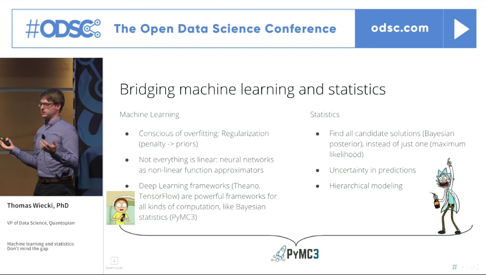
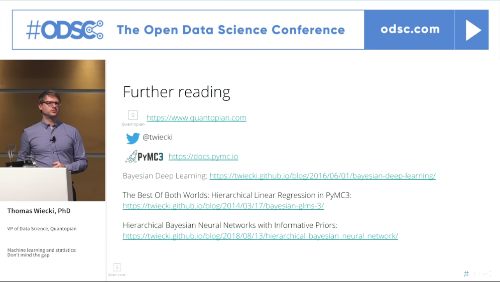

I heard a colleague dismiss AI as just 'statistics' awhile ago. While not a particularly useful critique, it did plant a seed of curiosity in my mind about the divisions between AI from the perspectives of computer science, engineering math and statistics. This imperfectly parallels the debate about AI and computer science being an art, craft, science or theory.
After a few years of working through typical AI/ML I have been realize that I've been spending an inordinate amount of time recently re/learning mathematics and statistics to grow beyond the spray-and-pray approaches of many black box AI techniques that still lack a theoretical grounding li
Time Series Forecasting Using RNN and Vector Autoregressive Model: When and How with Jeffrey Yau
Machine Learning and Statistics: Don't Mind the Gap, Thomas Wiecki, ODSC Europe, 21 Nov 2018 (Illustrated with a Platonic dialog between Rick and Morty) (Blog post on example of hierarchical bayesian neural network with code)

